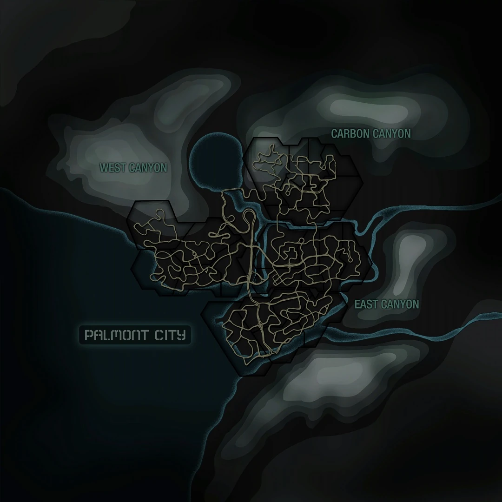
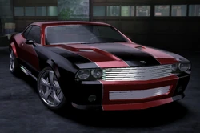
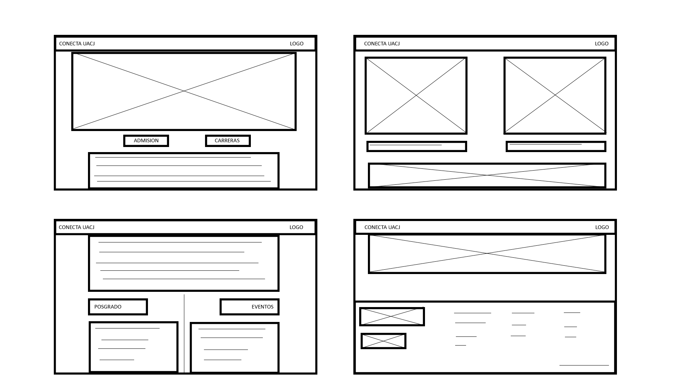
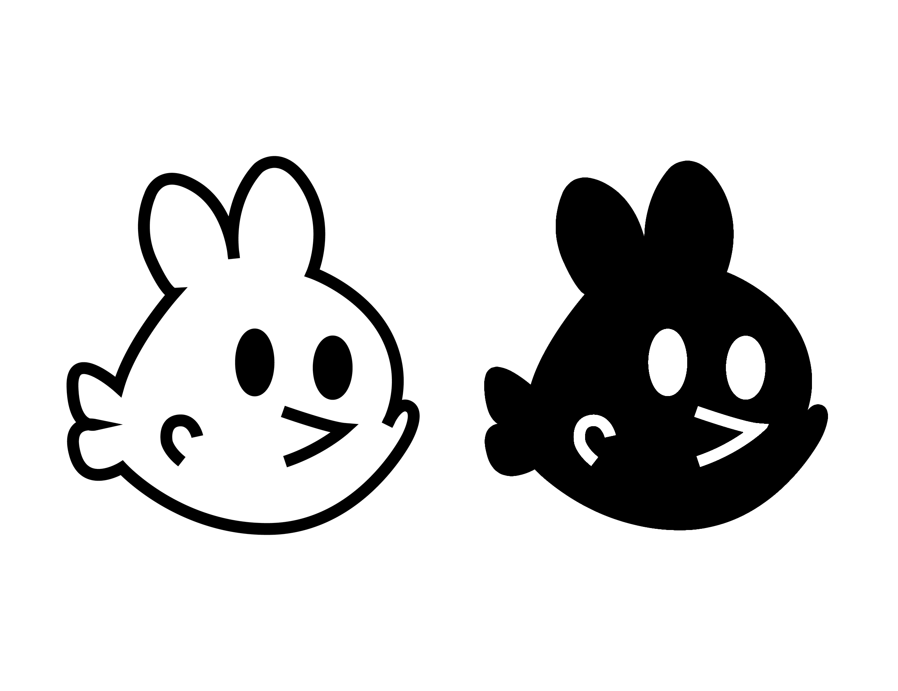
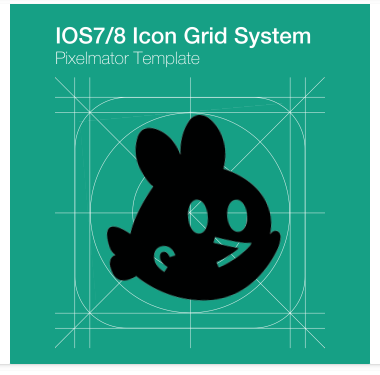
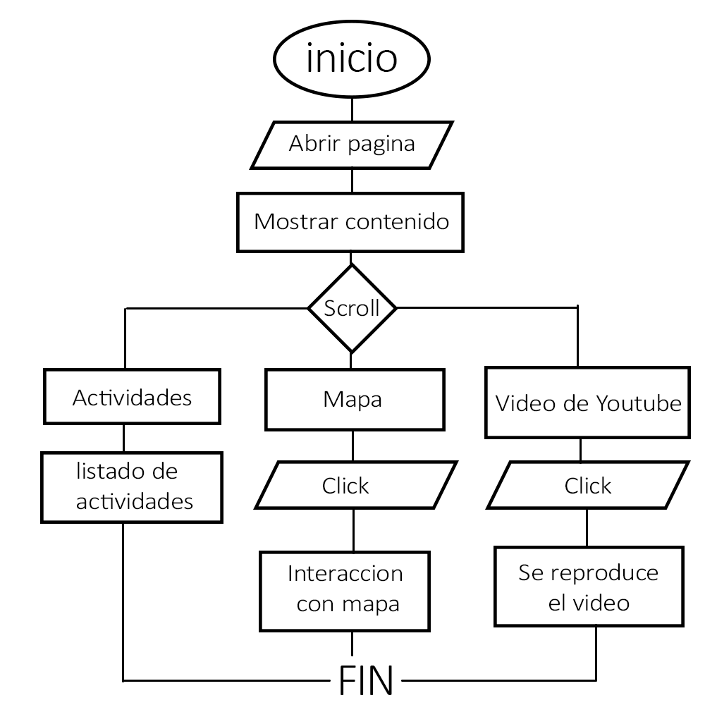

ACTIVIDADES
1.
Se realizaron actividades para relacionar conceptos de HTML con algo cotidiano o de gusto propio.
Yo decidi relacionar dichos conceptos con el videojuego "Need For Speed: Carbon" y algunos de sus elementos
Hypertexto
Yo relacione esto a los caminos como tal, los atajos y las rutas de la mayoria de carreras, ya que esto genera una conexion en todo el mapa
UX (Experiencia de usuario)
Esto le encontre relacion con la cantidad de opciones que posee el juego tanto de personalizacion como de inmersion a la hora de jugar
incluso dependiendo de que tipo de auto estes manejando (Muscle,Tuner o Exotic).
Prototipado
Aqui sencillamente lo relacione con los Concept car que hay en el juego de autos que aun no salian en esa epoca.
2.
Para familiarizarnos con los diagramas de flujo, se nos pidio que se realizara uno con algo relacionado a nuestro dia a dia o algo que nos gusta.
Yo hice uno simple de COD WARZONE.
3.
Se nos pidio realizar una recreacion de una pagina ya existente mediante la herramienta web "Figma".
En mi caso, la hice en photoshop por la confusion y la dificultad que me presento la pagina que se nos pidio usar.
4.
Se nos pidio que "criticaramos" una pagina web, identificar sus defectos y que mejorariamos, se realizaria un cuadro al respecto.
En nuestro caso, se uso la pagina ASSETTOLAND
5.
Se hizo un pequeño diagrama de flujo sobre funciones de alguna aplicacion o juego, para que otro equipo intentara adivinar
sin decir explicitamente que juego era en dicho diagrama, nuestro caso fue el juego GEOMETRY DASH.
6.
Se realizo una portada de revista para hablar de los temas tocados en la reciente conferencia de la UACJ hablando de la IA
Despues, el profesor nos pidio destacar algun rubro de diseño en el cual se nos dificulta ejercer y como nos puede ayudar la IA con eso.
Mi caso fue el dibujo y actividades hechas a mano, la Inteligencia artificial podria orientarme para realizar dichas actividades de forma mas sencilla
podria recopilarme informacion de distintos medios para darme una especie de tutorial resumido y asi ahorrar tiempo investigando en infinidad de videos y paginas.
7.
Se nos encargo leer una pequeña lectura de Joan Costa y relacionarlo a algun tema de nuestro agrado
Yo lo relacione a los diagramas de aerodinamica, ya que la lectura habla de relacionar temas complejos de manera simple
8.
Habia que trabajar en un concepto sobre un lavado de cara para la pagina oficial de la UACJ
Se realizaron unos bocetos previos y wireframes estaticos (he de reconocer que este trabajo lo hice incompleto)
Boceto

Boceto a Limpio
Prototipo de alta fidelidad

9.
Se nos encargo realizar un logo propio que nos represente como "marca"
y se usaria en el favicon de esta misma pagina, debia estar reticulado, pero en mi caso
no fue asi porque bajo mi propio crietio posiblemente erroneo "no lo necesita" es parte del propio logo no llevarla
Logo
Logo con regla de IOS
10.
Toco el proyecto de realizar una pagina web en equipo con el objetivo de vender algo
Enlace a pagina: Shhh! Pagina dedicada a venta de aplicaciones pirateadasSe nos enseño a como incorporar un pedacito de mapa
Y tambien a incorporar videos, les dejo estos 2 temazos del juego que esta de fondo
Por ultimo, el diagrama que representa la estructura de esta pagina
